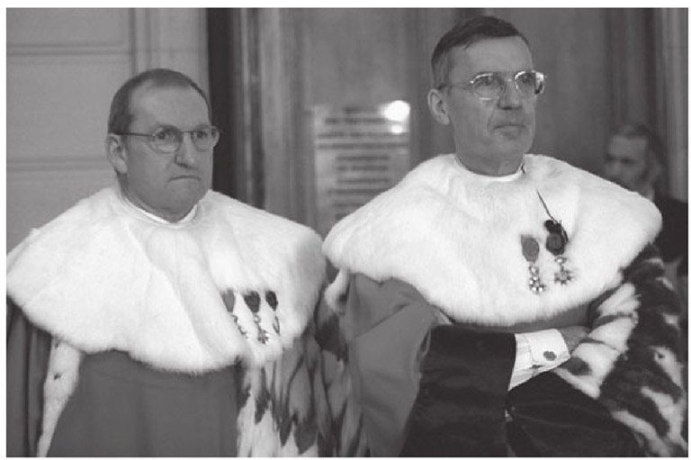
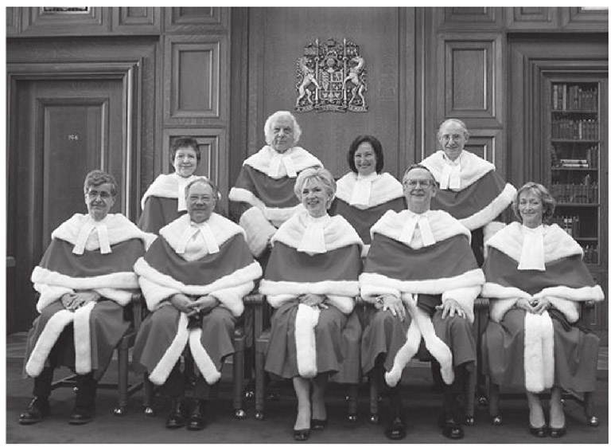
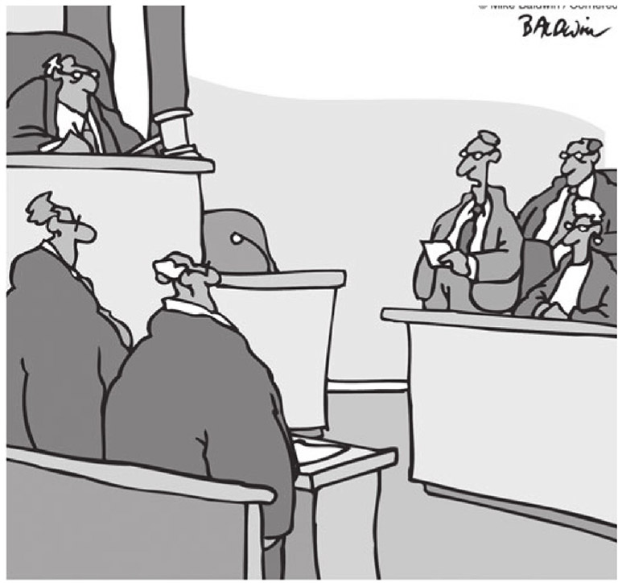

法官完全是法律的人格化体现。司法职能体现了公平、正义，以及法治铁面无情的实施。法官解决纠纷、惩罚违法者，并在没有陪审团的情况下决定有罪与否。在更为宏大的法律与法律制度层面上，法官是法律价值的监护人与守护者：正义与程序公正的卫士。
不过，法官在刑事犯罪中的角色尤其能够激发公众的兴趣。法庭戏对于小说家、剧作者和影视剧本作者来说，有着不可抵挡的魅力。在英语世界里，我们立刻可以联想到不少作品。狄更斯的《荒凉山庄》是一个极好的例子。阿尔伯特·加缪的《堕落》、卡夫卡的《审判》、哈珀·李的《杀死一只知更鸟》、斯考特·杜罗的《无罪推定》、约翰·莫提默的《法庭的鲁波尔》系列剧，以及约翰·格利山姆的畅销小说中对庭审过程的描绘是其他一些突出的例子。莎士比亚在《威尼斯商人》中展示了令人难忘的正义理念与法庭审理程序。电影中的法庭戏更加不胜枚举。午后电影的偶像们通常会扮演那些勇敢的辩护者：电影版的《杀死一只知更鸟》中的格里高利·派克，还有《大审判》中的保罗·纽曼。法庭和律师大量出现于许多成功的电视剧集中，《甜心俏佳人》、《律师本色》与《洛城法网》则是较近的例子。
我们很容易理解为什么法庭程序会这么具有娱乐性，这么吸引人。刑事审判的戏剧场面经常具有强大的吸引力。律师之间的对抗、被告不确定的命运、耸人听闻的证据——所有这些都会在展示过程中引起近乎窥私癖的好奇心。在有些情况下，虚构出来的司法程序的壮观程度并不亚于真实的庭审过程。特别是在美国，真实的庭审过程经常会有电视直播。当名人受审时，法庭中的摄像机确保了这一案件能够拥有广大的受众——指控的罪名越可怕，效果就越好。然而，审判很少能够具有这种程度的吸引力和魅力，它们通常是沉闷而冗长乏味的。
刑事审判可能会因为提交的证据而显得生动有趣，但民事审判通常缺乏这一调料。法庭从事的是解决纠纷的工作。代表各方当事人的律师致力于说服法庭采纳他们关于案件是非曲直的看法。在普通法系的审判中，一方引用某个先例，以此论证本案和之前的案件有充分的相似之处，所以应当遵循先例。另一方则致力于寻找本案与先例之间的细微区别，以指出两者存在不同之处。这是法律推理的精华所在。如果败诉方提起上诉，那么级别更高的法官将重新听取双方的论辩。
毫无疑问，法官们行使的责任相当繁重：
当代法哲学的领军人物罗纳德·德沃金评论说：“法庭是法律帝国的都城，法官们是它的君王。”在每一个法律体系中，法院都扮演着中心角色。但是这个角色究竟是什么？法官们的政治功能是什么？他们的任命、选举与责任又是怎样的？在刑事审判管理中，特别是在复杂的商业犯罪审判中，陪审团制度是不是一个有益的因素？普通法系国家的对抗制是否比大陆法系国家的讯问制更加优越？
对于普通法来说，法官扮演着基石般的角色，司法功能的离心力在理论和实践两个层面上推动着法律制度的运作。尽管在欧洲大陆国家的法典化体系中，法官的作用相对而言可能不那么重要，但是法官的影响力再怎么被高估，都不过分。
法官是法律体系的典型象征。在长袍与崇高的独立性之下，他们是正义的化身。以英国法官德夫林勋爵的话来说，法官向社会提供的“社会服务”就是：“消除不公正感”。这种不偏不倚体现在法官解决纠纷的判决之中，无异于一篇对自由社会和公正社会深具信心的论文。冷静理智的法官是民主政体的精粹。立法与司法之间所谓的界限也是这一政体最负盛名的标志之一。
尽管愤世嫉俗者认为这种吸引人的、经久不衰的关于司法职能的看法只不过是个神话，但这些怀疑并不足以轻易驱除法官作为法律的守护者、正义的保护人和智囊团的形象。当然，我们并不能否认，正如我们普通人一样，法官也会受到个人偏好和政治偏见的影响。但偶尔也有人认为，承认司法的弱点具有某种程度的颠覆性，著名的美国法官本杰明·卡多佐对此曾评论说：“似乎一提到法官也会受到人性的限制，法官就必然会因此失去他人的尊敬和信赖一样。”
司法职能是什么？
司法机构位于法律程序的核心。在努力揭开法官如何审理案件的神秘面纱之时，我们不得不追寻法律本身的意义：“什么才能构成法律”的理论，必然指引并贯穿裁判行为的每个层面。根据正统的、所谓“实证主义”的范式，法律是由一系列规则组成的体系。在没有可以适用的规则，或者规则具有一定程度的模糊性或不确定性的情况下，法官享有自由裁量权，来填补这一法律空缺。
图9 中世纪的法庭（约1450年）。
罗纳德·德沃金对这一观点的挑战很有说服力，他否认了法律只能由规则组成。在规则之外（规则通过“要么全有，要么全无”的方式加以适用）还有其他不属于规则的标准：“原则”和“政策”。与规则不同的是，它们具有“相当的分量或重要性”。一项“原则”是指“一项必须得到遵循的标准，并不是因为它可以促进或者保障一定的经济、政治或者社会形态……而是因为它是正义、公正或者道德的其他层面的要求”。而一项“政策”是指“一项标准，它确立了一个既定目标，通常是某一社群中经济、政治或者社会层面的进步”。当法官不能立即找到可以适用的规则时，或者根据既定的规则不能得出裁决结果时，他就要在互相冲突的原则之间加以权衡。这些原则并非规则，但它们并不因此就不能成为法律的一部分。在这种“难案”中，因为法官并不能够诉诸个人经验来作出裁决，所以与实证主义者的看法恰恰相反，法官并没有真正的自由裁量权。总有一个正确的答案，而法官的任务就是（在“难案”中）找到它，通过权衡各种相互冲突的原则，并据此决定他所审理的案件中各方当事人的权利。
这种裁决模式明显诉诸民主理论：法官们不参与立法，他们仅仅是强制执行权利，而权利的主要内容已经由代议制立法机构在法律中规定。事实上，德沃金的论点源自对“界定并维护法律的自由主义理论”与“认真对待权利”的关注（这一点与实证主义者的观点相反）。这一论点主要来自民主理论，德沃金之所以关注消灭强大的司法自由裁量权，其前提是法官有着令人不快的地方：法官通常是没有经过选举产生的官员，他们不对选民负责，但却拥有立法权或者准立法权。
法院是最好的解决纠纷的场所吗？法官们能够真正做到公正客观吗？刑事审判的目的是什么？有些法院——比如美国最高法院——是不是太政治化了？法官是否应当通过选举产生？陪审制度是否有效而公正？本章将努力回答其中的一些问题。
法院是什么？
人世纷争无所不在，它们必然需要一个友好解决的平台。法院是所有法律体系的必备要件。法院对于特定的刑事、民事以及其他事务具有权力与权威——或者，用律师们的话说，具有“管辖权”。这使得它们的裁决（以强制力为最终后盾）被当事人当作权威来接受，但如果当事人并不信任庭上的职业法官具有独立性和公正性，那么他们将不会愿意接受裁决。
法院会犯错误。法官难免受到人性脆弱之处的影响，所以有必要采取措施以纠正他们的错误。被错误定罪的被告所遭受的明显不公，可以通过赋予他上诉权加以纠正。同样，民事案件中的败诉方也可以基于法定理由，认为初审法院在解释法律时存在错误。对更高一级的法院提起上诉，就需要等级制度来对“一审法院”和上诉法院的层级加以区分。有些初审法院只有一名法官与一个陪审团：陪审员们负责在法官的指导下发现事实，法官负责确定所适用的法律。这一组合构成了法庭的审判。在其他初审法院中，事实与法律都由法官加以确定。
普通法法域中的上诉法院负责审查初审法院或者低一级的上诉法院作出的判决。他们的任务通常限于考虑法律问题：比如，初审法院对法律的适用与解释是否正确？通常他们不会审理有关事实问题的证据，但是如果有新证据出现的话，上诉法院可能会对其加以评估，以决定是否将该案件发回一审法院重新审理。
每个地方的法院都会遵循相应的程序，在有些国家，这些程序已经变得十分冗杂。在刑事审判中，因为法官作用的不同，这些程序也会相应具有较大的区别。普通法系国家采取了“对抗式”的制度，而大陆法系国家采取的则是“纠问式”或者“控告式”的制度。尽管它们之间的区别经常会被夸大，但是在一些基本的层面上，两种途径确实存在区别。普通法系的法官是公正的裁判，很少纡尊降贵地踏足争议的尘土。而大陆法系的法官在庭审中的角色则更加积极主动。
欧洲大陆的刑事预审法官直接介入了是否提起公诉的决定过程。这一职务起源于法国，欧洲其他一些国家，包括西班牙、希腊、瑞士、荷兰、比利时与葡萄牙也采用该制度。预审法官经常被认为是介于检察官与法官之间的角色，但是严格来说，这一说法并不准确，因为他并不决定是否提起公诉——这是由公诉人决定的事项，而预审法官完全独立于检察机构。他的主要责任，正如他的头衔所暗示的那样，是去调查所有对犯罪嫌疑人有利或者不利的证据，他有权力去审问犯罪嫌疑人。他还可以讯问受害人和证人，他可以去犯罪现场，参与验尸过程。在调查过程中，他可以批准拘留和保释，并下令搜查和扣押证据。
必须指出的是，预审法官的工作并非决定案件的是非曲直，而是通过审查证据决定是否应当对犯罪嫌疑人提起公诉。如果他决定提起公诉，那么案件会被转移到另外一个与他毫无联系的初审法院，该法院并没有义务遵循他已经作出的决定。因此，他的职能和普通法系的交付审判程序及美国的大陪审团有相似之处。以上两个制度的设计目的都是为了审查证据，以决定案件是否可以提起公诉。大陪审团虽然处于法官的监督之下，但是它的运作是由公诉人来主持的。它具有传唤证人以寻求对犯罪嫌疑人不利的证据的权力。

图10 穿着正式礼服的法国高级法官和法律官员。
所有主要的法律体系都有各自的优点和缺点。人们普遍认为——尤其是普通法系的律师这样认为——普通法系非常重视无罪推定的价值，它向检察机构赋以沉重的举证责任，要求它们必须证明案件已经“排除合理怀疑”。但这一点很成问题。法国法庭上的被告同佛罗里达的被告一样，享有基本的重要权利和保护。所有的民主国家都确认了无罪推定这一原则。事实上，这是《欧洲人权公约》第6条的要求，它适用于欧洲委员会的46个成员国。
对于对抗制的批评不仅仅来自民事律师。刑事审判中偶尔发生的奇怪行径（尤其是在美国），对于普通法系律师来说也是尴尬的事。这一程序有时候会堕落到做戏的境地，律师滥用对抗程序，似乎完全忽视了整个制度的目的。这一点在高调的、通过电视转播的名人审判中尤为明显，拿着过高报酬的律师歇斯底里地对着摄像机和陪审团大加表演。许多民事律师也对普通法系刑事司法制度显得有利于富人被告的方面大为震惊，富人能够负担得起庞大法律团队的费用。对O.J.辛普森和迈克尔·杰克逊的审判仅仅是最近发生的、最明显的例子。
通常情况下，普通法的公诉是以政府、国家的名义（或者在英国，以王权的名义）对被告提出的指控或者控告。为了判定检方的证据是否充分，在提起公诉之前，往往有一些初步审理程序。为了完成举证责任，检方会传唤证人，并提交对被告不利的证据。此时被告可以主张自己“无须答辩”。如果这一抗辩失败了（这是通常情况），被告将会提出证人和证据。证人将会被对方律师交叉询问，但是被告自己拥有“沉默权”：他不需要发言来为自己抗辩，但是如果他决定作证，那么他必须接受交叉询问。在美国，这一权利受到宪法第五修正案的保护。然后是双方发表结案陈词。当有陪审团参加庭审时，法官会作出相应的指示，然后陪审员会在私密状态下进行深思熟虑。有些法域要求陪审团作出全体意见一致的裁决，有些则只需要多数意见一致。
图11 宣布被指控犯有谋杀罪的前美国橄榄球明星O.J.辛普森无罪，引发了针对陪审制是否可靠的疑虑，尤其是在很多人认为DNA证据已经毫无疑问地确定了被告有罪的时候。
公正审理的权利
所有的人在法庭和裁判所前一律平等。在判定对任何人提出的任何刑事指控或确定他在一件诉讼案中的权利和义务时，每个人都有资格由一个依法设立的、合格的、独立的和无偏倚的法庭进行公正的和公开的审讯。
《公民及政治权利国际公约》第十四条第一款 [1]
判刑
如果被告被确定有罪，那么他将会被判刑。这通常发生在法院知悉被告的犯罪前科（如果被告具有犯罪前科）及有关个人品行的其他相关信息之后。如果被告有可能被判处监禁，关于被告个人背景的报告可能会被提交法庭：他的教育程度、家庭、工作经历等等。心理报告或者医疗报告也可能会与证据一起被提交给法庭，包括证明他的正直无可指责的证人。这一切之后可能还会有动人的、请求减轻刑罚的辩护。被告的律师试图说服法院，被告是残酷命运和贫困人生的牺牲品：贫穷、受他人操纵、父母的抚养存在问题，以及受到其他超出被告控制能力的强大力量的影响；这些原因才应该为被告的犯罪负责。
当然，每一个法域都会有一系列不同的刑罚供初审法院适用。这些刑罚包括监禁、罚金、缓刑、社区服务，或者暂缓监禁（监禁被暂时中止，比如说，中止期限为两年；如果他在两年内再次违法，那么原来的判刑可能会适用于被告）。
被定罪的被告总有权利向更高级别的法院提起上诉。这些法院不会再次开庭审理这个案件，而是详细审查诉讼程序的记录，以寻找任何可能使本案获得重新审理的错误。在特定情况下，检方如果认为某项刑罚过于宽松，可能会针对该判刑提起上诉。
民事审判
普通法系和大陆法系之间的区别，在民事审判中并不那么明显。法国法几乎已经趋向于取消民事审判：由审前准备法官作出的深入的审前准备，已经让起诉和证据成为书面工作。律师只需要就法院已经获得的证据材料提交摘要。需要进一步说明的是，法国民事审判的证明标准并不低于其刑事审判的证明标准。
在大陆法系国家，“普通”的法官只在“普通”的法院审理案件。 [2] 大致而言，这些法院的管辖权包括适用民法典、商法典和刑法典以及上述法典的补充立法的案件。在法国的普通法院体系中，阶层最高的法院是法国最高法院。它大概包括100名法官，法官们轮流组成六个专业法庭（五个民事庭，一个刑事庭），在某些特定的情况下，他们可以组成混合庭或者法院审判合议庭。 [3] 法国最高法院仅对于法律的解释问题拥有自由裁量权。德国拥有一系列独立的司法体系，每个体系都有最高法院。大多数大陆法系的制度都包含一系列拥有独立管辖权的行政法院。
普通法系的民事审判同样采取了对抗制。民事诉讼不是由政府或者王权发起的针对被告的诉讼，而是由受到侵害的原告起诉被告的诉讼。原告通常是为了获得损害赔偿，比如经济赔偿（因为侵权行为、违约行为或者其他民事违法行为）。双方当事人都有权传唤证人，证据规则与刑法审判的证据规则大体相同。但是，正如我们所见，一个非常重要的区别在于，刑事审判中的举证责任是“排除合理怀疑”，而民事案件中的原告只需要证明他的案件“具有相对较高的盖然性” [4] 。
法官是什么样的人？
除了美国这一显而易见的例外之外，普通法系的法官是从资深出庭律师中任命的，而欧洲大陆国家的法官是通过类似招考公务员的方式加以招募的。一般情况下，通过公开考试的方式，他们从大学中被直接招募，并不一定具备法律从业经验。成功的候选人将被任命为这一职业阶梯的最底层，职业训练在司法系统内部完成，选拔基于个人实绩。公开竞争被认为是保持职业立场以及司法独立性的最有效的方法，它可以防止政治偏袒和裙带关系，但是人们担心，提拔中的歧视可能会扩大行政部门 [5] 的影响，从而损害司法独立的精神。同时，通常情况下私人执业比当法官要有利可图得多，所以，更有才华的法学院毕业生可能会不愿意从事法官这一职业。
美国的情况则复杂得多。联邦法院分为三个层级：最高法院、巡回上诉法院与联邦地区法院。根据美国宪法，总统有权提名，并与参议院一起任命所有这三个层级的法院的法官。在收到来自司法部与白宫行政工作人员的推荐之后，总统向参议院提名候选人。司法部对这些被提名的候选人加以筛选，之后由联邦调查局对候选人开展调查，同时也会向美国律师协会就这些被提名人是否合适征求意见。
白宫法律顾问办公室同样起着作用，它与司法部、参议院的议员一起，考虑来自众议院议员、各州州长、律师协会以及其他机构的推荐。参议院司法委员会会审查这些候选人的资格。如果委员会拒绝了某一提名，它会请总统作出另一个提名。参议院司法委员会的提名将在参议院的执行会议中加以讨论。没有争议的候选人将会得到一致同意。在1789年至2004年美国最高法院的154名被提名人中，只有34名没有得到参议院的同意。然而，如果某一被提名人存在争议，那么争论将会随之而来。如果参议院司法委员会作出负面评价，结果将是参议院冷酷无情地拒绝这一候选人。成功通过以上程序的被提名人，将会得到总统的正式任命。 [6]
这个程序的冗长拖沓——包括参议员们的各种阻挠，以及这一制度可以预见的意识形态因素——给它带来了相当多的批评。批评者认为这一程序削弱了司法的独立性。赞成者认为，总统与参议院对联邦司法体系的组成和立场作出了至关重要的、合法正当的制衡。在联邦以外的层级上，美国有21个州的法官通过选举产生。这一情况相当罕见，在其他任何普通法系或者大陆法系国家均未见同例。尽管这一制度可能对民主主义者具有吸引力，但是它不可避免地将法官转变成政客。为了保住职位，法官必然会寻求公众情感和偏见的支持。虽然相形之下，选举制度比无视法官能力、只管任命俯首帖耳的法官的腐败政府作出的提名更为可取，但是几乎没有律师支持这一约翰·斯图亚特·密尔所谓的“民主制度所犯下的最为危险的错误之一”。
对于司法任命方式的不满，主要是针对被任命人的非民选性质（几乎没有女性或者少数族裔）。这种不满导致了司法任命委员会的建立，该委员会致力于为这一程序带来更多的透明与公正。司法任命委员会负有挑选人选之责。它存在于美国各州以及加拿大、苏格兰、南非、以色列、爱尔兰以及其他一系列欧洲地区，包括英格兰和威尔士——在英格兰和威尔士，自从2006年之后，委员会作为独立的、非政府的公众机构行使职能。司法职位的申请人必须提供一份九页纸的申请表，入围的候选人会被面试。评估他们的标准有五个：智力、个人品质（忠诚度、独立性、判断力、决断力、客观程度、个人能力与学习的意愿）、理解与公正处理事务的能力、权威性与沟通技巧，以及效率。

图12 在大多数普通法系法域内，女法官相当罕见。比如，在英国，直到2005年才有了第一位被任命于上议院——英国的最高法院——的女性。在南非、加拿大、美国以及新西兰的最高法院中，均有女法官审理案件。加拿大最高法院（如图所示）于1982年迎来了它的第一位女法官，现在它的九位法官之中有三位是女性，包括它的首席大法官在内。
司法机构的政治
尽管美国宪法并未明确授予最高法院司法审查权，但是自从1803年的标志性案件——马伯里诉麦迪逊案——以来，美国最高法院一直宣称，它有权废止那些经它认定与宪法条款相冲突的法律。这一最为有力的司法审查形式，使通过任命产生的法官有权对经由民主程序颁布的法律施加控制，即使这些法官是由参议院认可的。在这种控制中，通过宣布各州制定的、范围广泛的、涉及各种事务（例如堕胎、避孕、种族与性别歧视、宗教自由、言论自由与集会自由）的法律违宪，美国最高法院促成了许多重大的社会与政治转型。
在得到公众广泛支持的情况下，印度最高法院在社会、政治与经济生活等一系列领域展示出高度的司法能动性，这些领域包括婚姻、环境、人权、土地改革，以及选举法等。法官经常称宪法是超越政治文件的，视其为“社会理念”的永恒宣言。这一理念浸透着平等主义价值观，它代表着一种承诺：进行社会改革，以呼应那些曾激励着宪法制定者的社会正义原则。印度最高法院引人注目的法理学特点在于公益诉讼的概念，在这一概念之下，贫困者也可以得到诉诸法院的机会。印度最高法院判决，对贫困者的法律救济不应受到对抗制的限制。印度最高法院同样对于印度宪法第二十一条作出了从宽解释。该条规定：“非依法定程序，不得剥夺任何人的生命或者个人自由。”这一从宽解释造成了对个人实体权利的重大扩张。
根据废止种族隔离制度之后的南非宪法，南非宪法法院有权解释宪法。它依此作出了影响深远的判决，包括宣布死刑违法，维护居住权，坚持政府具有对家庭暴力提供有效救济措施及维护平等权的宪法义务。
美国最高法院的权力体现了强有力的司法审查权。美国最高法院可以将它对于宪法的司法解释加诸其他的政府部门 [7] 。其他较弱一些的司法审查形式则允许立法与行政部门有权拒绝这一判决，条件是公开拒绝。司法审查权逐渐被纳入有些国家的宪法和法律之中（比如英国1998年的人权法案、新西兰1990年的权利法案、加拿大1992年的权利与自由宪章）。
司法审查的批评者对于法官拥有的、凌驾于民主选举产生的立法者之上的权力持有异议。但是即使我们的立法机构是真正的代议机构，那些支持立法机构能够比法院更好地维护我们的权利的观点，至少也是站不住脚的。这不仅是因为政府更迭以及党派政治易受部门利益影响和易于妥协的问题已经臭名昭著，腐败更不消说，而且是因为正是由于法官不需要以这种政治方式“担负责任”，所以他们才是更为优秀的自由守护者。同时，基于司法的秉性、训练、经验，以及对以权利为基础的各种观点进行检验和争辩的法庭，我认为，天平已经倾向于以司法方式而非以立法方式解决纠纷。事实上，我们也很难看到后者在实践中的运作。当讨论的权利已经明显处于纠纷之中的时候，经选举产生的国会议员们又能够起什么作用呢？
而且，不幸的是，很难证明大家对于立法者的信任是正确的。尽管争论不时存在，但是某些基本的权利最好成为立法者的禁区，或者至少要处于党派的日常权谋之外。如果没有最高法院历史性的布朗案判决（该判决认为白人小学生与黑人小学生的教育设施彼此隔离是一种“本质上的不平等”），非裔美国人的公民自由会更早一些得到承认吗？与南非新的民主议会相比，南非宪法法院会更有可能保护人权吗？难道欧洲人权法院（位于斯特拉斯堡，负责审理有关国家违反欧洲《保护人权与基本自由公约》成员国义务的投诉）没有推动某些国家——比如说，英国——的公民自由吗？这一法院经常作出对英国政府不利的裁决，要求其修改一系列涉及受上述公约保护的权利（包括隐私权、免受肉刑的权利，以及精神病人的权利等）的国内立法。
有偏见的法官？
近年来，对于特定司法行为的合法性——有时甚至是诚实程度——的抱怨声浪渐起。政治保守主义者指责法官正在凌驾于人民的意志之上，而人民的意志已经体现在涉及堕胎、同性恋权利、平权行动、宗教以及其他主题的法律和直接投票之中。政治自由主义者则指责对女性的偏见、不检点的性行为、对少数人权利的严苛，以及保守政治观点深重的压力与影响。两边都在指责……罔顾人民的意见和通过打破任期限制的方式来保护职业政客的行为。各方——甚至高薪的公司律师——都在指责初审法院法官专横独断的常见行为。法官滥用法官地位，甚至接受贿赂的行为也不时为公众所知。此外，34年作为法学教授与律师的经验告诉我，还有另外一个普遍存在的问题：法官有太多的时候不愿意听取事实或者理由。他们开始时即持有严重偏向于一方当事人的偏见——当然，他们一定会拒绝承认——然后就对和他们的偏见相反的事实及相应的说理视而不见……当法官出于他们已经形成的偏见，忽略事实甚至虚构出想象中的反事实时，他们已经摧毁了司法制度的核心宗旨：基于事实而非偏见对案件加以裁决。他们同样……摧毁了对于司法制度的信任……事先形成的司法偏见、随之而来的对事实的视而不见、反事实的司法虚构，以及相应而生的一系列问题，位于当今司法制度最严重的问题之列。如果法官不再忽视事实以加强他们自身的偏见，那么这将有益于司法制度，使得法律不再成为空头许诺，也将有助于市民维持对于法律的信心。
劳伦斯·R.瓦维尔教授，《对于现代司法实践的指责》（2005），《司法责任动议 [8] 法律新闻》
由陪审团进行的审判
在刑事程序中，由“同等的人”组成陪审团进行审判的理念，常被视为普通法制度的基本信条。有些大陆法系法域也同样采用陪审团来决定被告是否有罪。比如法国的法官就与陪审团一起审理案件，陪审团同样参与决定加诸被告的刑罚。
对于在什么样的案件中使用陪审团，各个法域的规定并不相同。有些法域限于在刑事审判中使用陪审团，在民事审判中则不使用（比如法国）；有些法域在审判严重犯罪案件时使用陪审团（比如加拿大）；而另外一些法域（比如英格兰与威尔士）则在刑事审判及一些特殊的民事审判（比如诽谤）中使用陪审团。
美国的陪审团审判最为典型，刑事与民事诉讼程序中均使用陪审团。超过60%的陪审团审判是在刑事案件中，其余的为民事审判以及其他类型的审判，比如家事法庭诉讼程序。
陪审团审判诸多被夸大的优点之一是，它在一定程度上可以制约法官的权力和影响。有观点认为，通过让普通市民（通常是12名）参与司法进程，社会的价值观念可以得到表达。同时，在判断被告是否有罪的时候，与一名法官相比，一组随机挑选的外行是更为民主的裁决者；相形之下，法官往往被认为是公权力的代言人（不管这种看法正确与否）。

“我们认定被告有罪。我是说，没罪的话，为啥他去请了城里最好的律师啊？”
图13 陪审团可能会受到证据之外的事实的影响。
然而，对于陪审团的批评则通常表达了对以下事实的不安：与法官不同的是，陪审团并不需要给出裁决的理由，这就给情感与偏见打开了大门，特别是当案件可能涉及被告的种族因素的时候（例如声名狼藉的罗德尼·金案件，它的后果是灾难性的，详见下面的方框）。陪审员是否普遍具备理解复杂的科学证据或者其他技术证据的能力，这一点也一直饱受质疑。比如复杂的商业案件将会产生数量庞大的、高度专业化的信息。这也使得英国及其他法域提出了争议性的提议，要求在这些案件中废除陪审团。
种族，罗德尼·金——以及，一个充满偏见的陪审团？
1991年，在洛杉矶，数辆警车追逐着罗德尼·G.金，一位被指超速的抢劫假释犯。在追逐中金闯了若干次红灯，最终被逼停。车中的两名乘客遵守了警察的要求走出车外，在经过可以忽略不计的抵抗之后，他们被制服了，但是金明显拒绝遵从警察的指示，并因此受到了身体强制。他被手持金属警棍的警察们殴打了56次，至少被踢了六次，并被电子泰瑟眩晕枪击中了。三名洛杉矶警察实施了殴打行为，他们声称这是一名警官的指示。另外有23名执法人员在场，他们看到了袭击过程，但是没有作出任何努力来阻止这一行为。一些旁观者同样证明了这一殴打行为，其中一名旁观者还录下了这一事故。金受了重伤，包括头骨骨折以及部分面部神经受损。
陪审团（包括10名白人，一名西班牙裔人，一名亚裔人）将被告无罪释放。在陪审团作出裁决后的几个小时内，洛杉矶爆发了暴乱。当暴乱结束时，54人死亡，超过7000人被捕，数亿美元的财产遭到毁坏。
尽管此后有些警察被控侵犯了金的宪法权利，且因此被联邦法院定罪并处以监禁，但没有一个起诉特地提到了种族动机。事实上，只是在联邦法院的审判中，金才第一次出庭作证，证明他受到了警察的种族虐待，但是他之后又承认，他并不确定事实是否真的如此。
替代性争端解决方案
长久以来，批评者表达着对于以法院为中心的纠纷解决方法的不满。他们认为，除了其他问题之外，这一方法是不公正的、过度形式化的和排外的。
在美国，拥护替代性争端解决方案（ADR）的运动一度盛行，这项运动“出于人性、社群主义与社会福祉的考量……拒绝非人化、物化、法庭仪式带来的距离感，以及对于法律职业人士的依赖”。他们提倡更加友好的、对抗性更少的程序。这一运动推动了以立法形式鼓励使用非司法性质的仲裁，尤其是在解决涉及国际因素的商业纠纷的时候。
各方当事人将纠纷提交一名或多名仲裁员，并同意仲裁员的决定（称为“裁决”）对于各方均具备约束力。ADR的优点被认为是速度快、成本低、灵活性强，并且专业仲裁员的技术性很强。但是拖延也并不少见，而且各方当事人需要向仲裁员支付报酬，成本可能会因此增加。在有些法域内，强制执行仲裁裁决会比较麻烦。
诉讼：易怒好斗的美国与善于交际的英国
尽管美国看起来比任何欧洲大陆国家都更像英国，但其实，美国人的国民性与英国人的相对立。恭谨顺从、相信宿命、自我克制和缺乏进取精神，是大家最不会归结于美国人的个性。诉讼从某种意义上讲是场战斗，美国人就是战士，而足球场之外的当代英国人并非如此……国民性格可能并非原因，而是结果，法律制度的特征也可能仅仅是同样的原因所导致的结果；或者，更现实地说，是同样的复杂成因所导致的结果。美国在人身和社会阶层上的高度流动性、美国人民的移民起源、美国在种族和民族上的异质性，以及美国人民所拥有的财富和闲适等因素，可能是美国人民易怒好斗和个人主义性格的成因。而且，这也是对于解决纠纷的司法程序存在大量需求的独立原因。一个更加静态的、统一的、紧密结合的社会可能纠纷较少——因为人们更能理解他人，或者因为人们彼此之间关系存续及未来相遇的可能性更大，以致大家尽量避免冲突——或者，也可能拥有更好的非正式解决纠纷的方式……
理查德·A.波斯纳，《英格兰与美国的法律及法学理论》
（克拉伦登出版社，1996年），第109页—110页